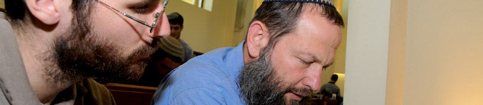
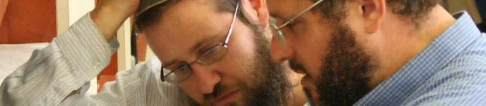
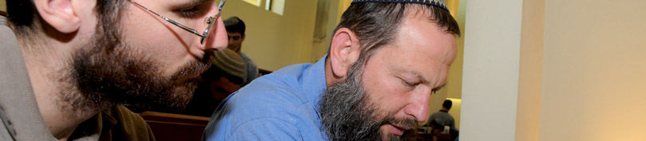
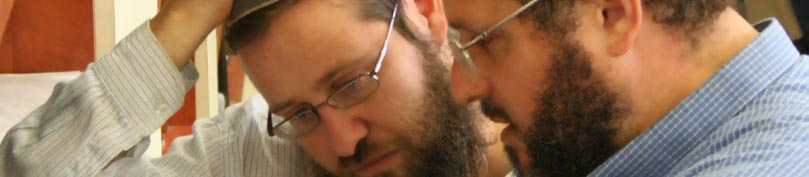

The yeshiva was founded by Rabbi Chaim Ganz in 1996 with the goal of producing Torah scholars with spiritual and emotional vigor as well as extensive Torah knowledge, who could connect to the pressures and emotional needs of life in the big city. The yeshiva’s vibrant beit midrash, its rabbis, and its students are the infrastructure and source of inspiration for a wide variety of educational and community activities in Tel Aviv.
The yeshiva’s mission statement: The yeshiva oversees an educational process based on diligence and joy in one’s studies that instills in its students a sense of mission. This fortitude will spur them to mobilize for various national missions, with restoring and strengthening the core Israeli spirit being the highest priority.
Having to deal with Tel Aviv’s different cultural atmosphere imposes on each of the yeshiva students a personal responsibility to strive in Torah with greater vigor, to enrich his inner, spiritual world and harness it to strengthen the city’s values and spirituality.
The students: The yeshiva students are primarily young men before and after their army service, married kollel students who make their homes near the yeshiva, and rabbis in training. There are also IDF soldiers and officers who serve in the area and who want to devote time to Torah study, secular people seeking an encounter with Judaism, and a wide variety of people who regularly attend Torah classes or learn with a study partner.